7 Simple and Multiple Linear Regression
library(ggplot2) # for general data visualization
library(skedastic) # for testing model assumptionsAlthough correlations can help us evaluate the association between a pair of variables, this association is not directional: either X can lead to Y or Y can lead to X. But most of the time we are interested in directional relations between variables, either because we think it can help us uncover possible causal associations, or because the relation only makes sense in a particular direction (e.g., age is likely to affect how extraverted someone is, but how extraverted someone is will not affect their age).
To answer questions where we have one (or more) variables predicting a continuous outcome, we can use regression. Some of the terminology I will be using below is:
Independent variable / predictor variable / explanatory variable: The variable that you think affects or explains your outcome variable
Dependent variable / outcome variable: The variable that you want to try and predict or explain
7.1 Simple Regression
Simple regression is used when we have one independent variable predicting the outcome variable. We will start off with a continuous independent variable; a bit further down the page, we will talk about what to do when you have categorical variables (with 2 or more categories).
7.1.1 Simple Regression with a Continuous Predictor
One of the most straightforward cases of simple regression is when both your independent and dependent variables are continuous. For an example, let us say we wanted to predict Neuroticism using a person’s age.
All linear regression models use the same code:
lm(Dep.Variable ~ Indep.Variable, data = dataset.name)
As you have more than one independent variable (multiple regression) you just separate them using the + sign.
So, if we wanted to predict Neuroticism (our dependent variable) using age (our independent variable), we could just write:
lm(NeuroSum ~ age, data = big5)##
## Call:
## lm(formula = NeuroSum ~ age, data = big5)
##
## Coefficients:
## (Intercept) age
## 34.5249 -0.1254However, this gives us no information except for the estimates of our model intercept and our slope. Therefore, it is usually better to save your model as an object. Then you can use functions like summary to access not only the estimates of those coefficients, but also the associated test statistics and p-values.
model1 = lm(NeuroSum ~ age, data = big5)
summary(model1)##
## Call:
## lm(formula = NeuroSum ~ age, data = big5)
##
## Residuals:
## Min 1Q Median 3Q Max
## -20.1376 -5.1411 -0.0165 4.8568 16.6089
##
## Coefficients:
## Estimate Std. Error t value Pr(>|t|)
## (Intercept) 34.52491 0.75791 45.553 < 2e-16 ***
## age -0.12535 0.02594 -4.832 1.81e-06 ***
## ---
## Signif. codes: 0 '***' 0.001 '**' 0.01 '*' 0.05 '.' 0.1 ' ' 1
##
## Residual standard error: 6.834 on 498 degrees of freedom
## Multiple R-squared: 0.04478, Adjusted R-squared: 0.04286
## F-statistic: 23.34 on 1 and 498 DF, p-value: 1.806e-06Now we have a lot more information! What does this tell us?
Intercept: The intercept (34.52) is the expected value of our outcome (Neuroticism) when our independent variable (age) is 0.
Slope for age: The slope representing the effect of age on Neuroticism is -0.12. This means for that every 1-year increase in a person’s age, their Neuroticism score is expected to decrease by 0.12 points. This value is significantly different from 0, indicating that age does have a relation with Neuroticism.
Another value of interest from this model output is the \(R^2\) value at the bottom of the summary. You’ll notice that there are two values - Multiple R-Squared and Adjusted R-Squared. Although the two are pretty similar in this example, Adjusted R-Squared accounts for the fact that as you add more and more predictors to your model, \(R^2\) will always increase, and so can be preferred.
\(R^2\) tells you what proportion of variance in your outcome variable is explained by the predictors in your model. So in this case, about \(4.3\%\) of the variance in Neuroticism is explained by people’s age.
If we wanted to visualize this relation, we could use ggplot.
ggplot(data = big5, aes(x = age, y = NeuroSum))+
geom_point()+ # plot the data points
geom_smooth(method = "lm", se = TRUE)+ # adds in the estimated regression line (along with the standard error of prediction to show how uncertain we are)
theme_classic()+ # removes some of the background
labs(x = "Age", y = "Neuroticism", title = "Plot of Age versus Neuroticism") # add plot labels so people seeing this plot on its own know what it's about!## `geom_smooth()` using formula = 'y ~ x'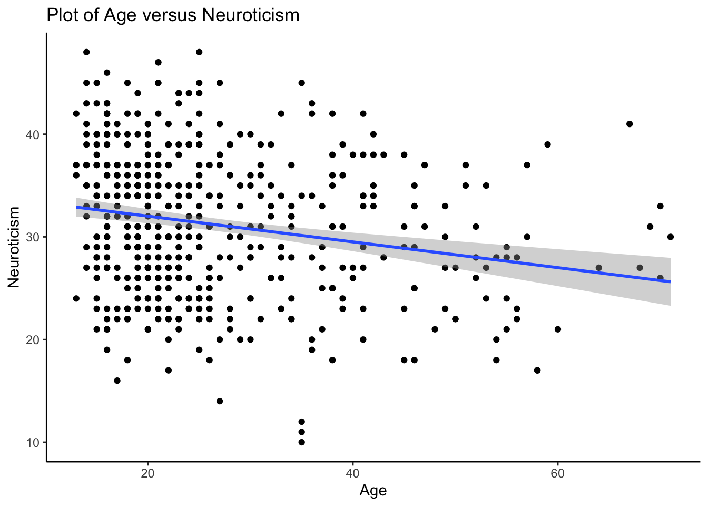
7.1.2 Simple Regression with a Centered Continuous Predictor
One thing you may have noticed is that the intercept in our previous model was pretty meaningless. A Neuroticism score for someone who is 0 years old?!
Therefore, you’ll often find people centering their predictor variables at more meaningful values, such as the mean of that variable. This keeps the relation between your predictor and outcome unchanged, but puts the intercept somewhere more meaningful to interpret.
To center your predictor, all you have to do is subtract the mean of your independent variable from every value of the independent variable. You can save this as a new column in your dataset, and then use that as a predictor in your regression model like we did above.
# create centered predictor variable as a new column
big5$age_centered = big5$age - mean(big5$age, na.rm = TRUE)
# run the regression model
centered_model = lm(NeuroSum ~ age_centered, data = big5)
summary(centered_model)##
## Call:
## lm(formula = NeuroSum ~ age_centered, data = big5)
##
## Residuals:
## Min 1Q Median 3Q Max
## -20.1376 -5.1411 -0.0165 4.8568 16.6089
##
## Coefficients:
## Estimate Std. Error t value Pr(>|t|)
## (Intercept) 31.17400 0.30565 101.994 < 2e-16 ***
## age_centered -0.12535 0.02594 -4.832 1.81e-06 ***
## ---
## Signif. codes: 0 '***' 0.001 '**' 0.01 '*' 0.05 '.' 0.1 ' ' 1
##
## Residual standard error: 6.834 on 498 degrees of freedom
## Multiple R-squared: 0.04478, Adjusted R-squared: 0.04286
## F-statistic: 23.34 on 1 and 498 DF, p-value: 1.806e-06The interpretation of these parameters is very similar to before - but which parameters changed their value?
Intercept: The intercept (31.17) is the expected value of our outcome (Neuroticism) when our independent variable (age_centered) is 0. In this case however, age_centered (\(Age - \bar{Age}\)) is only 0 when \(Age = \bar{Age}\), so our intercept represents the expected value of Neuroticism for someone who is the average age in our dataset (which is 26.73). This value has changed from our initial model, because we have changed at which value of age we interpret our intercept.
Slope for age: The slope representing the effect of age_centered on Neuroticism is -0.12. This means for that every 1-year increase in a person’s age, their Neuroticism score is expected to decrease by 0.12 points. This value did not change from our initial analysis, because centering our predictor variable is a linear transformation, and does not change the relation between our predictor and outcome variable.
7.1.3 Simple Regression with a Binary Predictor
Although regression is typically conducted with a continuous predictor, it can also handle binary or categorical predictor variables. We will first walk through the interpretation of the regression model when the predictor is binary (only 2 categories), and then go on to when the predictor is categorical (>2 categories). In the case of a simple regression model with a binary predictor variable, this is the same as conducting a t-test to examine whether there are group differences in the mean of our continuous variable!
To run a linear regression with a binary variable, first make sure your binary variable is saved as a factor in R. Suppose we wanted to examine whether there were differences in average levels of Openness for people who were left versus right-handed (remember this from our #ttests section?).
class(big5$hand) # currently, the class of our handedness variable is an integer; in fact it has the values 0 (didn't answer the question), 1 (right-handed), 2 (left-handed), 3 (both)## [1] "integer"# since I just want to compare left- and right-handed participants, I will just create a subset of the data with only those participants for this example
big5_subset = big5[big5$hand == 1 | big5$hand == 2, ]
# Now, I will make hand in this subsetted data frame a factor variable
big5_subset$hand = factor(big5_subset$hand)
head(big5_subset$hand) # you will notice that the levels of hand are still 1 and 2 - if we wanted to, we could rename these to be something more meaningful (e.g., right/left), but for now we'll keep it as is## [1] 1 1 1 1 1 1
## Levels: 1 2Once our binary variable is saved as a factor, we can run a regression model just as we have been doing.
model2 = lm(OpennessSum ~ hand, data = big5_subset)
summary(model2)##
## Call:
## lm(formula = OpennessSum ~ hand, data = big5_subset)
##
## Residuals:
## Min 1Q Median 3Q Max
## -14.0607 -2.0607 -0.0607 2.9393 12.9393
##
## Coefficients:
## Estimate Std. Error t value Pr(>|t|)
## (Intercept) 33.06067 0.18848 175.404 <2e-16 ***
## hand2 0.05697 0.70746 0.081 0.936
## ---
## Signif. codes: 0 '***' 0.001 '**' 0.01 '*' 0.05 '.' 0.1 ' ' 1
##
## Residual standard error: 3.976 on 477 degrees of freedom
## (4 observations deleted due to missingness)
## Multiple R-squared: 1.36e-05, Adjusted R-squared: -0.002083
## F-statistic: 0.006485 on 1 and 477 DF, p-value: 0.9358Ok, so how can we interpret each of these regression parameters?
- (Intercept): The intercept of 33.06 is the expected Openness score when our predictor variable (hand) is 0. But how can this be - our predictor variable only has 2 options - 1 or 2!
When you use a categorical variable as a predictor in a regression model, R is doing some stuff behind-the-scenes to make the intercept interpretable. It is assigning a value of 0 to the first category in our predictor variable - unless you’ve specified otherwise, the first category is whichever value comes first alphanumerically. This is called the reference group.
So in this case, since the two options of our binary variable are 1 and 2, and 1 comes first numerically, everyone who was in that group (everyone who is right-handed) gets assigned a 0 for their group value behind-the-scenes.
The intercept of 33.06 is actually the expected value of Openness when a person is right-handed. This expected value is just the average of the group, so 33.06 is the average Openness score for right-handed people in our sample.
When your predictor is binary, the intercept represents the average value of the “reference group”, or the group whose value on the binary variable comes first alphanumerically.
- hand2: What does hand2 mean? Well, hand is the name of our predictor variable, and the 2 is indicating which group this slope is representing (this will become more important when we have more than 2 groups). When you have categorical variables, the slope represents the difference between the mean of the reference group and the mean of the group for that slope - so left-handed people have an average Openness score that is 0.06 points higher than right-handed people (which means their Openness score is \(33.06 + 0.06 = 33.12\)).
This slope is not significant - this means that the difference in means is not significantly different from 0, or right-handed and left-handed people have Openness scores that are not significantly different from each other. This matches the results of the t-test we conducted earlier - in fact, the t-value (0.08) is roughly same as the test statistic we calculated earlier (with maybe a difference in sign, due to a difference in the order the test statistic is calculated). This is why a simple linear regression with binary variable is the same as a two-sample t-test: because a test of the slope is the same as testing the difference in the two means!
7.1.4 Simple Regression with a Categorical Predictor (> 2 categories)
We can apply the same strategy when we have a categorical variable with more than 2 categories. As with two categories, we will have a reference group (typically the first group alphanumerically unless we specify otherwise), and then slopes for each group which represent the difference in means between the reference group and that group. A regression with a categorical variable with more than two groups is similar to an ANOVA, although it gives slightly different information.
Let us re-do the ANOVA we did before, examining the relation between Openness and which continent a person is from, but this time in the regression framework.
model3 = lm(OpennessSum ~ continent, data = big5)
summary(model3)##
## Call:
## lm(formula = OpennessSum ~ continent, data = big5)
##
## Residuals:
## Min 1Q Median 3Q Max
## -14.40 -2.38 0.49 2.60 12.62
##
## Coefficients:
## Estimate Std. Error t value Pr(>|t|)
## (Intercept) 33.4000 0.3919 85.223 < 2e-16 ***
## continentAmericas -0.1600 0.5543 -0.289 0.77295
## continentAsia -1.4900 0.5543 -2.688 0.00742 **
## continentEurope -0.0200 0.5543 -0.036 0.97123
## continentOceania 0.1100 0.5543 0.198 0.84276
## ---
## Signif. codes: 0 '***' 0.001 '**' 0.01 '*' 0.05 '.' 0.1 ' ' 1
##
## Residual standard error: 3.919 on 495 degrees of freedom
## Multiple R-squared: 0.02277, Adjusted R-squared: 0.01487
## F-statistic: 2.883 on 4 and 495 DF, p-value: 0.02219As before, R has re-coded our variables to set one group as the reference group (in this case, Africa), and then has created indicator variables for all other continents.
(Intercept): The intercept represents the expected value (or mean) of our outcome variable for our reference group. Thus, 33.40 is the average value of Openness for participants from Africa.
Slopes: Each slope represents the difference in average Openness between the reference group and the group represented by the slope. The significance test will tell us whether these differences are significant or not (i.e., allows us to conduct pairiwse comparisons).
- continentAmericas: The average level of Openness for participants from the Americas is 0.16 points lower than the average level of Openness for participants from Africa.
- continentAsia: The average level of Openness for participants from Asia is 1.49 points lower than the average level of Openness for participants from Africa.
- continentEurope: The average level of Openness for participants from Europe is 0.02 points lower than the average level of Openness for participants from Africa.
- continentOceania: The average level of Openness for participants from Oceania is 0.11 points higher than the average level of Openness for participants from Africa.
You will notice that the F-statistic for the model (2.88), df (4 and 495), and p-value (.02) is the same as the F-statistic, df, and p-value from the ANOVA we calculated earlier. So we can get the same conclusion as the ANOVA before (e.g., there is a difference in Openness across continents), but unlike the ANOVA, we don’t have to conduct a separate post-hoc test, as the pairwise comparison between the reference and other groups is already done.
However, you’ll notice that the only comparisons we have are between the reference group and other groups. For example, we no information on whether the mean of Openness for participants from the Americas is different than the mean of Openness for European participants. Therefore, the choice between an ANOVA (and post-hoc tests) versus a regression might depend on which group comparisons you’d like to make in the end.
Side note: You might notice that some of the results of the pairwise comparisons are different from what we calculated before (e.g., the difference between Africa and Asia is now significant, even though it wasn’t before). This is because the Tukey test corrects for multiple comparisons, and uses a slightly different reference distribution than the regression model.
7.2 Multiple Regression
When we have two or more predictor variables, we move from simple linear regression to multiple linear regression. This allows us to examine the effects each predictor variable has on the outcome, controlling for the other predictor variable(s). In other words, what is the relation between our predictor and outcome, after taking into account people’s scores on the other predictor variables.
To estimate a multiple regression model, we do the exact same thing we did before with simple regression models. But now, we separate our different predictor variables using +. So if we wanted to estimate the effects both age and Agreeableness have on Neuroticism, we could do this as follows:
multiplereg_model = lm(OpennessSum ~ age + AgreeablenessSum,
data = big5)
summary(multiplereg_model)##
## Call:
## lm(formula = OpennessSum ~ age + AgreeablenessSum, data = big5)
##
## Residuals:
## Min 1Q Median 3Q Max
## -13.8640 -2.6121 0.0639 2.5997 13.3627
##
## Coefficients:
## Estimate Std. Error t value Pr(>|t|)
## (Intercept) 29.085295 1.617036 17.987 <2e-16 ***
## age 0.009449 0.014931 0.633 0.5271
## AgreeablenessSum 0.116943 0.048255 2.423 0.0157 *
## ---
## Signif. codes: 0 '***' 0.001 '**' 0.01 '*' 0.05 '.' 0.1 ' ' 1
##
## Residual standard error: 3.932 on 497 degrees of freedom
## Multiple R-squared: 0.01233, Adjusted R-squared: 0.008352
## F-statistic: 3.101 on 2 and 497 DF, p-value: 0.04586How to interpret these parameters?
- (Intercept): The intercept has the same interpretation as before - it is the expected value of our outcome variable when all predictors in our model are equal to 0. So in this case, the intercept of 29.09 is the expected Neuroticism score for someone who is 0 years old (age = 0) and has an Agreeableness score of 0.
The slopes in a multiple regression model are generally interpreted the same way as in a simple regression model. The only difference is that now the slope represents the change in the outcome for a 1-unit change in our predictor, holding all other predictors constant. The reason we want to hold other predictors constant is so that we can isolate the effect of the single predictor variable, so the only thing that should be changing is the one predictor we’re interpreting.
- age: The slope of 0.01 means that for every 1-year increase in a person’s age, their Neuroticism score is expected to increase by 0.01 points, holding their Agreeableness score constant. One way you could think about this is, if we had two people with the exact same Agreeableness score (say, for example, they both had a score of 20) but one person was 25 and one person was 26, we would expect the 26-year-old to have a Neuroticism score that is 0.01 points higher than the score of the 25-year-old.
The slope of age is not significant, so there is no relation between Neuroticism and age after taking into account people’s level of Agreeableness.
AgreeablenessSum: The slope of 0.12 means that for every 1-point increase on a person’s Agreeableness score, their Neuroticsm score is expected to increase by 0.12 points, holding age constant. This slope is significant, so there is a relation between Agreeableness and Neuroticism even after accounting for age.
Adjusted R-Squared: As before, we also have a \(R^2\) value that tells us the proportion of variance in our outcome that is explained by our predictors. However, we want to report the Adjusted R-Squared, as this accounts for having multiple predictors in the model (which will increase \(R^2\), even if the predictors are just explaining noise). So less than 1% of the variation in Neuroticism is explained by age and Agreeableness.
7.2.1 Higher-Order Polynomials
Another type of multiple regression is including polynomial terms in your model (e.g., quadratic or cubic terms). In this case, although you do have multiple predictors (e.g., a linear term and quadratic term), the predictor itself is actually the same, just raised to different powers.
Polynomial models are the simplest way to account for potential nonlinear relations between your predictor and outcome variable, but the interpretations of the model parameters become a little bit more complicated.
To include a polynomial term in the model, you just write your predictor raised to whatever power you want to include (e.g., x^2), but you have to include it as the argument to a function called I(), so that R doesn’t think the ^ is part of the formula, but instead tells R to treat ^ “as is” (basically, raise the predictor to that power like we intended).
Let’s see this in our example of the relation between age and Neuroticism, only know we think this relation is better described with a quadratic model.
quadmod = lm(NeuroSum ~ age + I(age^2), data = big5)
summary(quadmod)##
## Call:
## lm(formula = NeuroSum ~ age + I(age^2), data = big5)
##
## Residuals:
## Min 1Q Median 3Q Max
## -19.4294 -5.1183 -0.2755 4.9175 16.9716
##
## Coefficients:
## Estimate Std. Error t value Pr(>|t|)
## (Intercept) 37.996261 1.927492 19.713 < 2e-16 ***
## age -0.363584 0.124407 -2.923 0.00363 **
## I(age^2) 0.003395 0.001734 1.958 0.05082 .
## ---
## Signif. codes: 0 '***' 0.001 '**' 0.01 '*' 0.05 '.' 0.1 ' ' 1
##
## Residual standard error: 6.815 on 497 degrees of freedom
## Multiple R-squared: 0.05209, Adjusted R-squared: 0.04827
## F-statistic: 13.65 on 2 and 497 DF, p-value: 1.687e-06Not so hard! How do we interpret each of these parameters?
Intercept: The intercept interpretation remains the same before: it is the expected value on our outcome when all predictors are 0. Therefore, 38.00 is the expected Neuroticism score for someone who is 0 years old (as this leads to both predictors to be 0). If we wanted this to be more interpretable, we could mean-center age like we did before.
Linear slope of age (age): The linear slope of age (-0.36) has changed interpretation. It is no longer the change in Neuroticism for a 1-year change in age, but it is the slope of the tangent line (or the rate of change) at our intercept (when our predictors are 0). In other words, for someone who is 0 years old, we would expect the relation between age and Neuroticism to have a slope of -0.36.
This can be seen as the slope of the dashed line in the plot below - the dashed line represents the tangent line at age = 0.
Quadratic slope of age (I(age^2)): The quadratic slope of age can be viewed as the interaction between age and itself - in other words, how does the relation between age and Neuroticism change at different values of age?
ggplot(data = big5, aes(x = age, y = NeuroSum))+
geom_point(alpha = .1)+
geom_smooth(method = "lm", formula = y ~ poly(x, 2), se = FALSE)+
geom_abline(intercept = 37.996, slope = -0.364, linetype = "dashed")+
theme_classic()+
labs(x = "Age", y = "Neuroticism")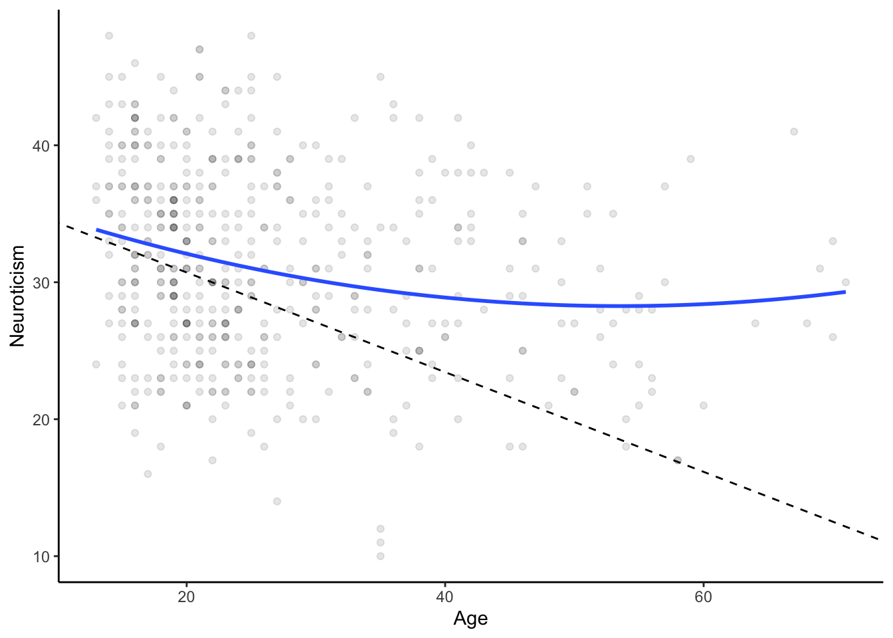
7.2.2 Interactions
The final aspect of regression models we will cover is interactions. Interactions are useful for studying moderation effects, when we think that the relation between a predictor variable and outcome variable depends on the level of a second predictor variable. This is typically done (or easiest to interpret) with one continuous and one categorical variable (e.g., the relation between the continuous predictor and continuous outcome is different depending on which group you are in) but can be done when both predictors are continuous or both categorical (for both variables being categorical, refer back to the section on interactions in anova).
To specify interactions in regression models, you can simply use an asterisk (*) between the predictors you want to specify an interaction between. You do not have to specify the predictors separately from the interaction: writing out predictor1*predictor2 is interpreted by R as wanting both main effects (the effect of predictor1, and the effect of predictor2) as well as their interaction.
Let us see this in an example, looking at how Neuroticism predicts Conscientiousness, and how this relation is moderated by participant’s gender.
big5_subset2 = big5 %>% filter(gender == 1 | gender == 2)
# categorical variables should be of class "factor" or "character" to run appropriately; right now, gender is of class numeric
big5_subset2$gender = as.factor(big5_subset2$gender)
# specify the interaction between Neuroticism and gender with NeuroSum*gender
multiplereg_interaction = lm(ConscSum ~ NeuroSum*gender,
data = big5_subset2)
summary(multiplereg_interaction)##
## Call:
## lm(formula = ConscSum ~ NeuroSum * gender, data = big5_subset2)
##
## Residuals:
## Min 1Q Median 3Q Max
## -10.966 -2.292 -0.158 2.281 11.737
##
## Coefficients:
## Estimate Std. Error t value Pr(>|t|)
## (Intercept) 30.54975 1.09220 27.971 <2e-16 ***
## NeuroSum 0.02854 0.03507 0.814 0.4162
## gender2 -3.50497 1.47966 -2.369 0.0182 *
## NeuroSum:gender2 0.11208 0.04661 2.405 0.0166 *
## ---
## Signif. codes: 0 '***' 0.001 '**' 0.01 '*' 0.05 '.' 0.1 ' ' 1
##
## Residual standard error: 3.58 on 492 degrees of freedom
## Multiple R-squared: 0.04231, Adjusted R-squared: 0.03647
## F-statistic: 7.245 on 3 and 492 DF, p-value: 9.166e-05You can see in our output that we have estimates for the intercept ((Intercept)), the two main effects of our predictor variables (NeuroSum and gender) and the interaction between the two (NeuroSum:gender). Let’s interpret each of these terms:
(Intercept): As before, the intercept is the expected value of our outcome when all predictors in our model are equal to 0. Notice that if both Neuroticism and gender are equal to 0, then the interaction term (which is created by multiplying Neuroticism by gender) is also equal to 0. So a male (gender = 0) who has a score of 0 on Neuroticism is expected to have a Conscientiousness score of 30.55.
Main effects of Neuroticism and gender:
- In a multiple regression model, when we interpreted one slope, we just had to state that the other predictor variable was being held constant, but it did not matter which value it was held constant at. Now, with the interaction term in our model, we have to specify that the other predictor variable is held constant at 0 - this is because a change in our predictor variable of interest will affect both the slope we’re interested in and and the interaction term, which does not allow us to isolate the main effect unless the interaction term is set to 0.
- Also, many researchers say that if the interaction term in a model is significant, the main effects should not be interpreted. This is because a significant interaction term means that the effect of one predictor on the outcome (a main effect) depends on the level of the other predictor, so what is the point in interpreting the main effect without mentioning the interaction.
- If we were to interpret it anyways, the main effect of Neuroticism (-0.08) means that when gender = 0 (the participant is male), a 1-point increase in Neuroticism will lead to a 0.08 decrease in Conscientiousness score. The main effect of gender means that, when the Neuroticism score is 0, females are expected to have average Conscientiousness scores that are 3.50 points lower than males.
- In a multiple regression model, when we interpreted one slope, we just had to state that the other predictor variable was being held constant, but it did not matter which value it was held constant at. Now, with the interaction term in our model, we have to specify that the other predictor variable is held constant at 0 - this is because a change in our predictor variable of interest will affect both the slope we’re interested in and and the interaction term, which does not allow us to isolate the main effect unless the interaction term is set to 0.
The interaction term is significant. The value of the interaction term is the difference in slopes representing the effect of Neuroticism on Conscientiousness between males and females. Since it is significant, the effect of Neuroticism on Conscietiousness is different between males and females.
Now that we know the relation between Neuroticism and Conscientiousness depends on gender, we might want to know how the relation is different for males and females. You can do this visually (as we will do below), but also by conducting a “simple effects” analysis, where you re-run the regression model separately for each group.
# re-run the regression between Neuroticism and Conscientiousness for males
model_male = lm(ConscSum ~ NeuroSum,
data = big5 %>% filter(gender == 1))
# re-run the regression between Neuroticism and Conscientiousness for females
model_female = lm(ConscSum ~ NeuroSum,
data = big5 %>% filter(gender == 2))
summary(model_male)##
## Call:
## lm(formula = ConscSum ~ NeuroSum, data = big5 %>% filter(gender ==
## 1))
##
## Residuals:
## Min 1Q Median 3Q Max
## -10.4345 -2.2918 -0.1919 1.9009 8.3943
##
## Coefficients:
## Estimate Std. Error t value Pr(>|t|)
## (Intercept) 30.54975 1.09648 27.862 <2e-16 ***
## NeuroSum 0.02854 0.03521 0.811 0.419
## ---
## Signif. codes: 0 '***' 0.001 '**' 0.01 '*' 0.05 '.' 0.1 ' ' 1
##
## Residual standard error: 3.594 on 196 degrees of freedom
## Multiple R-squared: 0.003341, Adjusted R-squared: -0.001744
## F-statistic: 0.6571 on 1 and 196 DF, p-value: 0.4186summary(model_female)##
## Call:
## lm(formula = ConscSum ~ NeuroSum, data = big5 %>% filter(gender ==
## 2))
##
## Residuals:
## Min 1Q Median 3Q Max
## -10.9665 -2.2595 -0.1384 2.4632 11.7366
##
## Coefficients:
## Estimate Std. Error t value Pr(>|t|)
## (Intercept) 27.04479 0.99565 27.163 < 2e-16 ***
## NeuroSum 0.14062 0.03062 4.592 6.51e-06 ***
## ---
## Signif. codes: 0 '***' 0.001 '**' 0.01 '*' 0.05 '.' 0.1 ' ' 1
##
## Residual standard error: 3.571 on 296 degrees of freedom
## Multiple R-squared: 0.06649, Adjusted R-squared: 0.06334
## F-statistic: 21.08 on 1 and 296 DF, p-value: 6.508e-06By examining the summary output, we can see that the relation between Neuroticism and Conscientiousness only exists (is significant) for females, whereas it is nonsignificant for males.
7.3 Visualizing Regression Lines
When you visualize a regression model, it’s pretty standard to plot your observed data as a scatterplot, and then put your estimated regression line on top of that.
For a simple regression with a continuous predictor, this is pretty straightforward (and if you have a categorical predictor, you can use the visualization methods you learned about for t-tests and ANOVAs).
ggplot(data = big5, aes(x = age, y = NeuroSum))+
geom_point()+ # to plot a scatterplot of the data
geom_smooth(method = "lm", se = TRUE)+ # to overlay the estimated regrssion line along with the standard error of the line
theme_classic()+
labs(x = "Age", y = "Neuroticism", title = "Age versus Neuroticism")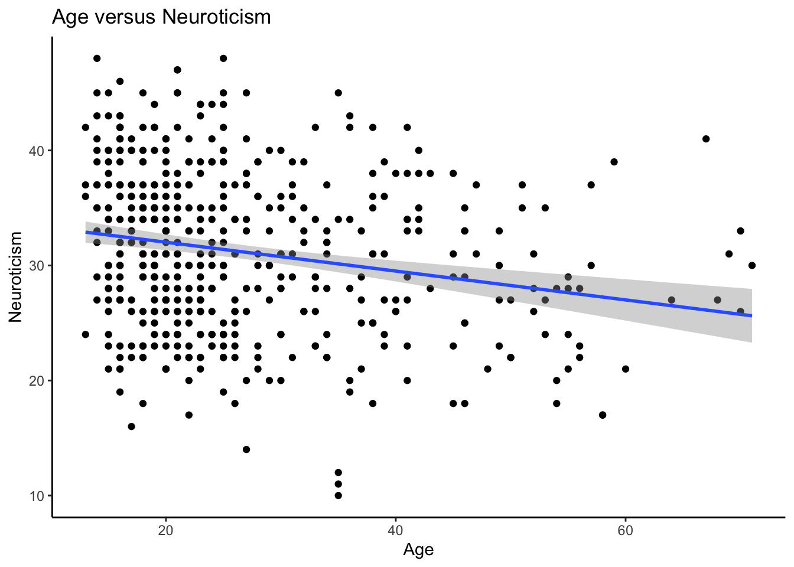
Things get a little more complicated once you have have multiple predictor variables. We will talk about the situation with 2 predictor variables (one continuous predictor, and the other predictor is either categorical, continuous, or a polynomial term). These approaches can then be extended if you have more than 2 predictor variables, although it’s likely to get a lot messier.
7.3.1 Visualizing Multiple Regression: One Continuous Predictor, One Categorical
When you have one continuous predictor and one categorical predictor, you can simply plot separate regression lines showing the relationship between the continuous predictor and outcome at each level of the categorical variable. These regression lines can be placed within the same plot, or in separate plots.
Let’s suppose we were trying to plot the interaction model we ran earlier, where we predicted Conscietiousness based on Neuroticism and gender (where for gender we only considered males and females, due to the low number of participants who reported their gender as non-binary). Therefore, we will use the big5_subset2 dataset for our plot, since that is the dataset where (1) gender has been subsetted to only males and females and (2) gender has been transformed to a factor.
In these plots, the continuous predictor is typically placed on the x-axis. Then, if all regression models are placed in the same plot, different colors are used to represent the different levels of the categorical variables. If the regression models are in separate plots, we use a function called facet_wrap() to split up the plots based on a categorical variable.
# regression lines at each level, in the same plot
ggplot(data = big5_subset2, aes(x = NeuroSum, y = ConscSum,
color = gender))+
# we add color = gender so that our datapoints and regression
# lines have a different color for each group
geom_point()+
geom_smooth(method = "lm", se = TRUE)+
theme_classic()+
# to make the labels for color more informative, we can use
# scale_color_discrete(), which lets us change the values of
# a discrete variable that we are using different colors for
scale_color_discrete(labels = c("Male", "Female"))+
labs(x = "Neuroticism", y = "Conscientiousness", color = "Gender")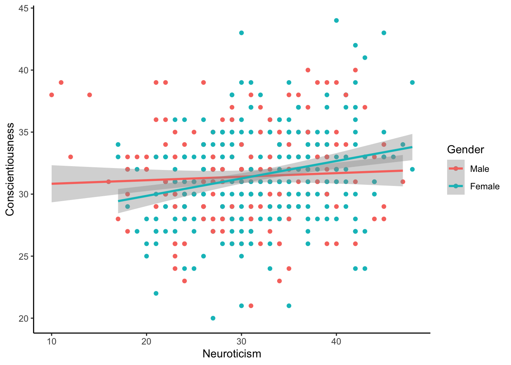
# regression lines at each level, across different plots
# in this case, you might want to change the values of the variable you are splitting into different plots so that the label is informative
# you can do this by directly modifying the dataset, but I will show how to do this by using an argument called labeller
# what do you want the labels to be?
gender.labs = c("Male", "Female")
# what are the labels currently? Make sure the order matches with the order you used for the labels above?
names(gender.labs) = c("1", "2")
ggplot(data = big5_subset2, aes(x = NeuroSum, y = ConscSum))+
# because we will be splitting up the regression lines for each gender into different plots, we don't necessarily need to add different colors for each gender, but we could!
facet_wrap(~ gender,
labeller = labeller(gender = gender.labs))+
# in facet wrap, you can split your graph into different plots
# based on a categorical variable
# variables before the ~ will be arranged vertically, and variables
# after the ~ will be arranged horizontally
# then to add labels, you will use the argument:
# labeller = labeller(faceting.variable = variable.labels)
geom_point()+
geom_smooth(method = "lm", se = TRUE)+
theme_classic()+
labs(x = "Neuroticism", y = "Conscietiousness")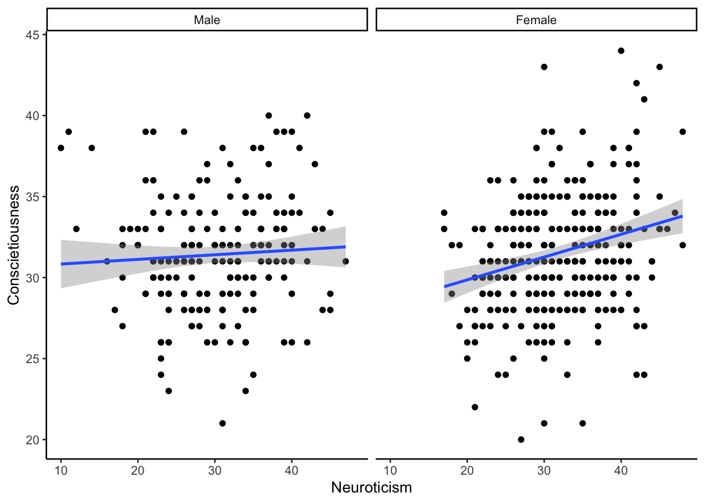
The choice between plotting both regression lines into the same plot versus different plots depends on the goals of your research - it is easier to compare regression lines if they are on the same plot, but that can get a little bit messy (especially when you have more than 2 categories). However, we as we can see in either regression plot, the relationship between Neuroticism and Conscientiousness is stronger for females than males (the line is steeper), which is what we got from our simple effects analysis.
7.3.2 Visualizing Multiple Regression: Two Continuous Predictors
When you have two continuous predictor variables, the visualization is not as clean-cut, because there are no built-in categories that you can split your plots by. However, you might still be interested in creating this visualization, particularly when you have an interaction between two continuous variables.
Therefore, it is pretty standard that when you plot the interaction between two continuous variables, that you form a categorical variable out of one of your continuous variables for illustrative purposes of how the relation between the remaining continuous predictor and outcome changes. (I am bolding this because normally we don’t want to categorize continuous variables!). The categorical variable you form is typically for people who are at the average level of the continuous variable, 1 SD above the average, and 1 SD below the average.
Let us suppose we wanted to look at how Openness (our outcome variable) is predicted by Agreeableness and age. To visualize this, we will get the predicted values for the relation between Openness and Agreeableness at different ages (the average age, 1 SD above the average age, and 1 SD below the average age).
In order to use the predict function, we need to provide it with two things: a lm model, and a dataset with the input values to generate predictions for. In this case, we want to use the original Agreeableness values from our dataset, but want to set age to one of three specific values. Therefore, we will create three new datasets, one for each value of age, and then predict from that.
# create a dataset with Agreeableness and average age
big5_averageage = big5[ , c("id", "AgreeablenessSum")]
# now we create a column that contains the average value of age
# it has to be called age to match the name of the predictor in our linear model
big5_averageage$age = mean(big5$age, na.rm = TRUE)
# get the predicted values if we used the values in this dataset as the input
# predict(modelname, newdataset)
multiplereg_interaction = lm(OpennessSum ~ AgreeablenessSum*age, data = big5)
big5_averageage_predict = predict(multiplereg_interaction, big5_averageage)
# these predicted values show the relation between Agreeableness and Openness in our dataset, for someone who is average age
# Repeat the process above for someone who is 1 SD below the average age
big5_sdbelow = big5[ , c("id", "AgreeablenessSum")]
big5_sdbelow$age = mean(big5$age, na.rm = TRUE) - sd(big5$age, na.rm = TRUE)
big5_sdbelow_predict = predict(multiplereg_interaction, big5_sdbelow)
# Repeat the process above for someone who is 1 SD above the average age
big5_sdabove = big5[ , c("id", "AgreeablenessSum")]
big5_sdabove$age = mean(big5$age, na.rm = TRUE) + sd(big5$age, na.rm = TRUE)
big5_sdabove_predict = predict(multiplereg_interaction, big5_sdabove)
# Now, to graph this, we gather all these predictions into one dataframe, along with the original Openness, Agreeableness, and age values
big5_plot = big5[, c("id", "OpennessSum", "AgreeablenessSum", "age")]
big5_plot$meanage_predict = big5_averageage_predict
big5_plot$sdbelow_predict = big5_sdbelow_predict
big5_plot$sdabove_predict = big5_sdabove_predict
# However, we need to get all the predicted values into one column, and then have one column to tell us which age value these predictions are at
# This way, we can color our prediction lines
# to do this, we have to "pivot" our data into long format (collapsing values from multiple columns down into 1)
# important arguments:
# data = the dataset you want to pivot
# columns = the columns you want to collapse down into one
# names_to = the name of the column that contains the old column names
# values_to = the name of the column you want the column values to go into
big5_plot = tidyr::pivot_longer(data = big5_plot,
cols = c("meanage_predict",
"sdbelow_predict",
"sdabove_predict"),
names_to = "agegroup",
values_to = "predicted")
head(big5_plot)# Now we can make a plot, with different colored lines for each age
ggplot(data = big5_plot, aes(x = AgreeablenessSum, y = OpennessSum))+
geom_point()+
geom_line(aes(x = AgreeablenessSum, y = predicted, color = agegroup))+
theme_classic()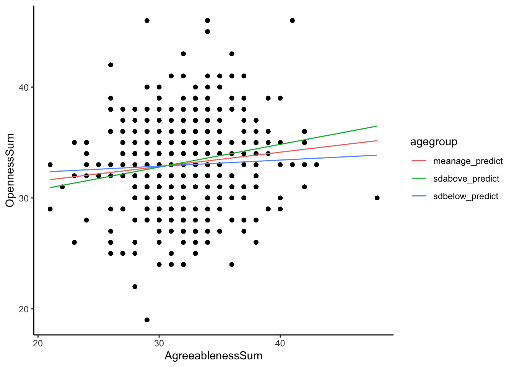
# Now we can see that we have three different lines - one showing the relation between Agreeableness and Openness for someone who is average age, one showing the relation for someone who is 1 SD above average age, and one for someone who is 1 SD below average age
# Let's make the graph a bit nicer by changing the labels on the axes, as well as the labels for the different age groups
ggplot(data = big5_plot, aes(x = AgreeablenessSum, y = OpennessSum))+
geom_point()+
geom_line(aes(x = AgreeablenessSum, y = predicted, color = agegroup))+
scale_color_discrete(labels = c("Average Age", "1 SD Above", "1 SD Below"))+
# the order you put the new labels in has to match the current order (which is alphabetical, unless you changed the factor levels to be otherwise)
theme_classic()+
labs(x = "Agreeableness", y = "Openness", color = "Age")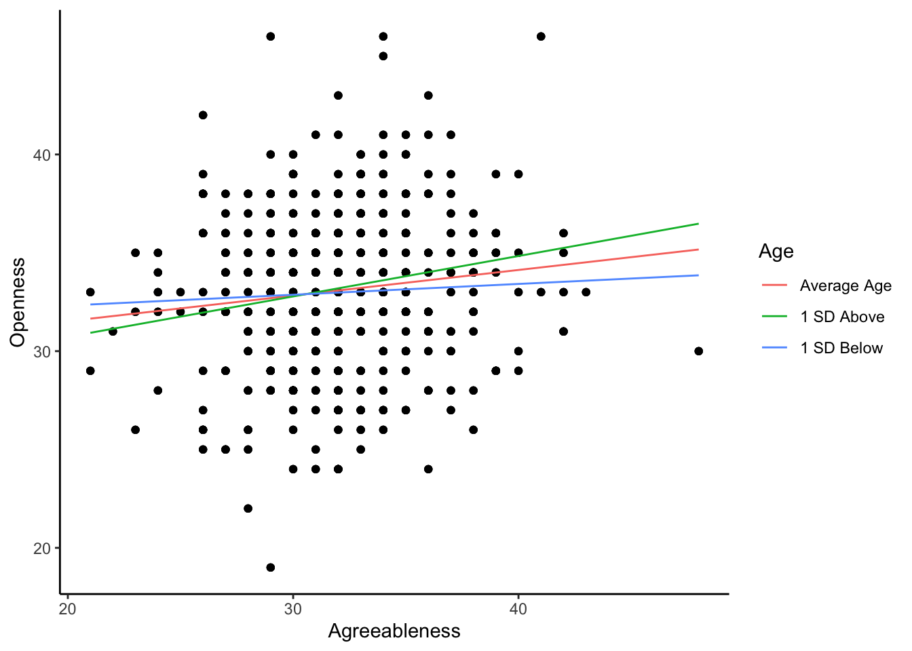
7.3.3 Visualizing Multiple Regression: Polynomials
Polynomials are a special case of multiple regression, in the sense that we’re not looking at how the relation between Predictor 1 and the outcome changes at the different levels of Predictor 2, we’re just trying to plot one regression line like we did with simple regression.
Luckily, this just requires a small change to the geom_smooth part of the ggplot2 code!
Suppose we wanted to plot the polynomial model we had estimated before: where \(age\) and \(age^2\) were both predictors of Neuroticism.
ggplot(data = big5, aes(x = age, y = NeuroSum))+
geom_point()+ # plot the data
geom_smooth(method = "lm", se = TRUE,
formula = y ~ poly(x, 2))+ # even though our predictor was age and outcome was Neuroticism, use x and y in the formula argument
theme_classic()+
labs(x = "Age", y = "Neuroticism", title = "Quadratic Relation between Age and Neuroticism")7.4 Checking Assumptions of the Regression Model
Linear regression makes 4 main assumptions:
- Observations are independent from each other
- The relation between the predictor and outcome is linear
- The residuals of the model are normally distributed
- The residuals of the model have equal/constant variance (this is called homogeneity of variance or homoskedasticity)
The first assumption is normally determined based on how you collected your data - is it reasonable to assume that different observations are independent from each other? In other words, the response of one observation has no impact on the response on another observation.
To check assumptions 2-4, we can use a visual check, as well as formal statistical tests for assumptions 3 and 4. To get the visual plots to check these assumptions, we use the built-in plot function.
plot(model1) # the input of the plot() function is the model we want to check assumptions for 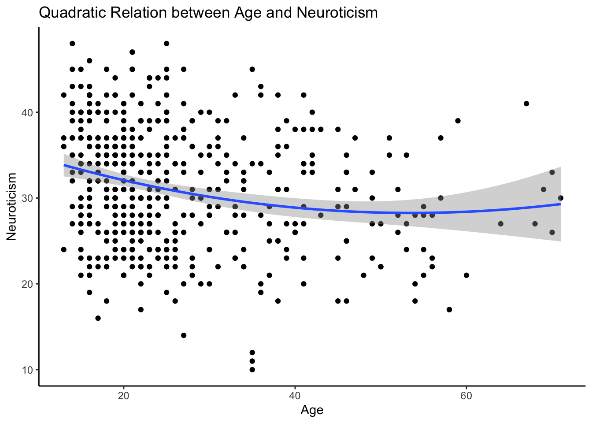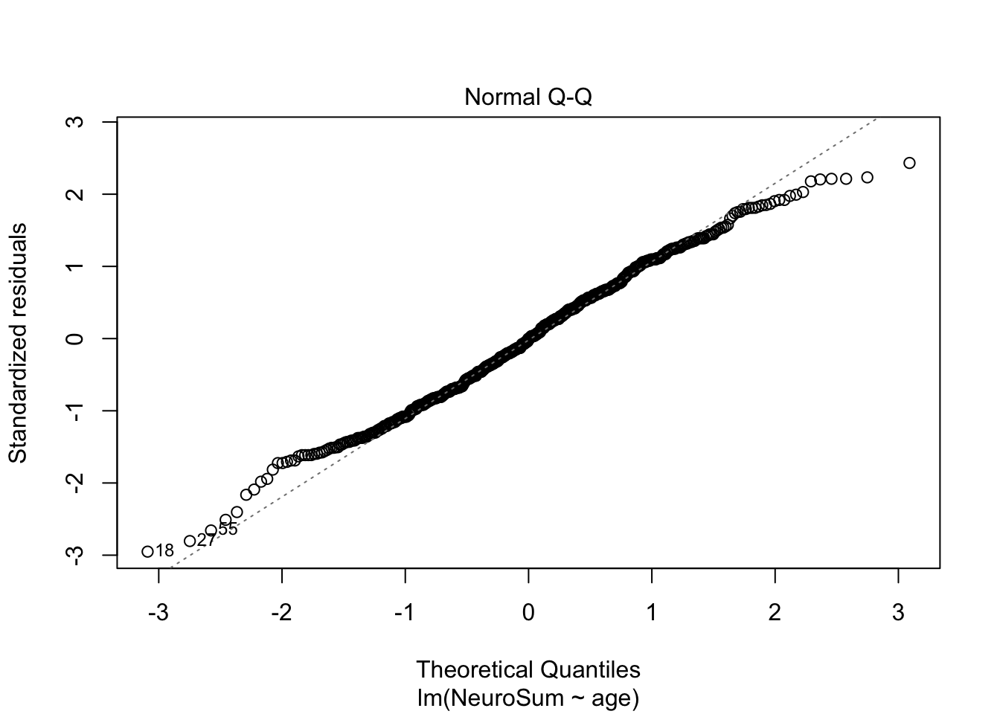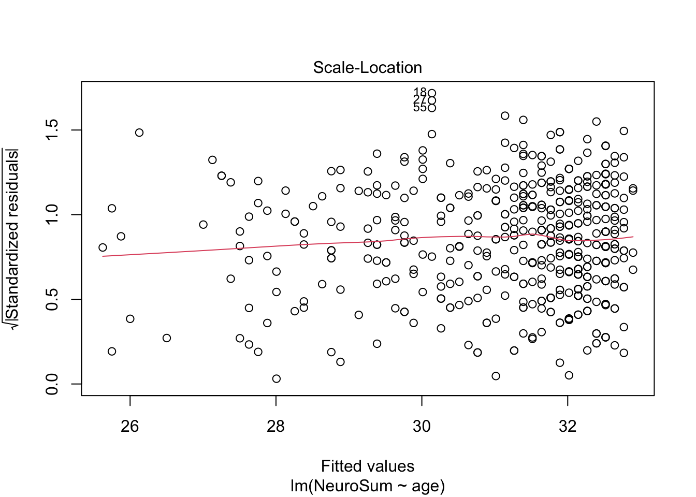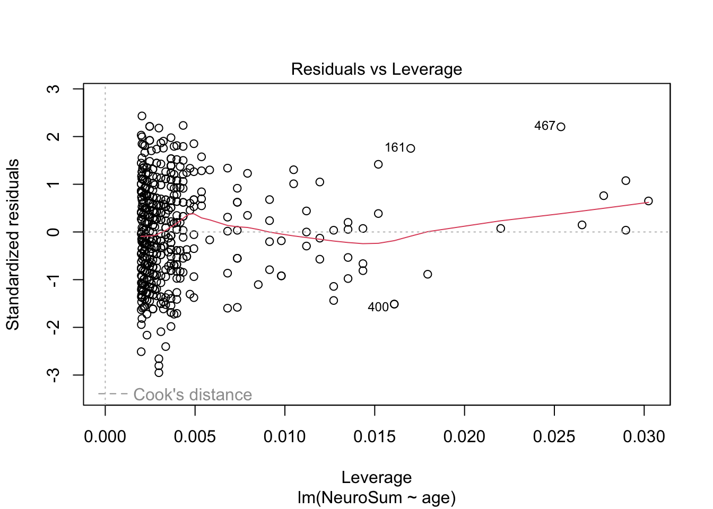
This returns four plots, but really we just need to look at the first 2 to examine our assumptions. The first plot (residuals versus fitted) can tell us whether assumption 2 (linear relation) and assumption 4 (homogeneity of variance) is met, and the second plot (normal QQ-plot) can tell us about assumption 3 (normality of residuals).
To check for linearity assumption: is the red line in the residuals versus fitted plot roughtly flat at y = 0 (does it match the gray dashed line)? If so, this assumption is met.
In our example, the red line appears pretty flat, with maybe a slight uptick at the end, but on the whole I would say this supports the assumption that the relation is linear.
To check for homogeneity of variance: Does the spread of the residuals in the residuals vs fitted plot look pretty even, and the points are randomly scattered around the line y = 0? In other words, there is no clear pattern in the residuals versus fitted plot, or a fan-shape? If there is a pattern or fan-shape, this indicates the model is doing a better job predicting at certain values of your predictor than others, which we don’t want.
In our example, the spread of the residuals looks pretty even and random across the fitted values, so homogeneity of variance is met.
To check or normality of residuals: Do the points in the normal QQ-plot fall along the dashed line y = x? If so, then the normality of residuals assumption is met.
Again, although there is a slight deviation from the line at the top right of the graph (indicating the residuals might be slightly positively skewed), the plotted points roughly match the y = x line, so the residuals can be assumed to be normally distributed.
However, these checks of the assumptions can be more based on your subjective opinion. Two people could look at the same graphs and potentially come to different conclusions about whether or not the assumptions are met. So do more formal ways of checking these assumptions exist?
You can conduct White’s Test for Heterskedasticity to check for homogeneity of variance, and a Shapiro-Wilks test to check for normality of residuals. For both these tests, the null hypothesis is that the assumption is met (e.g., there is homogeneity or there is normality), so you want to fail to reject the null hypothesis in order to meet the assumptions.
To conduct White’s Test, you can use the white function from the package skedastic, and for Shapiro-Wilks Test, you can use the shapiro.test function that is built into R.
white(model1) # for White's test, give the function your lm model as an argumentshapiro.test(model1$residuals) # for the Shapiro-Wilks test, you need to give it the model residuals specifically##
## Shapiro-Wilk normality test
##
## data: model1$residuals
## W = 0.99231, p-value = 0.01117So the p-value for White’s test was \(p = .67\), which means we fail to reject the null hypothesis, and we assume we have met the assumption of homogeneity of variance.
The p-value for Shapiro-Wilk test was \(p = .01\), so we reject the null hypothesis. Therefore, although our visual inspection led us to believe we had normally-distributed residuals, based on this test we actually have non-normally distributed residuals.
If the assumptions are violated, you can apply data transformations like you learned about in 4 to try and make your residuals more normally distributed.